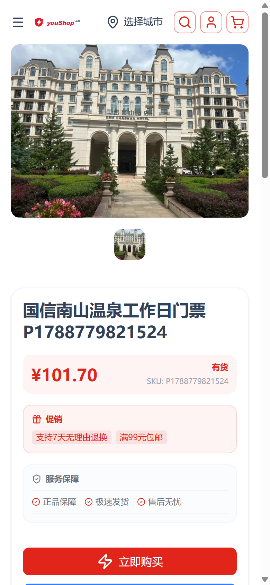
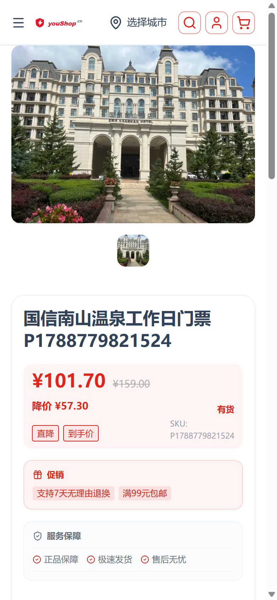
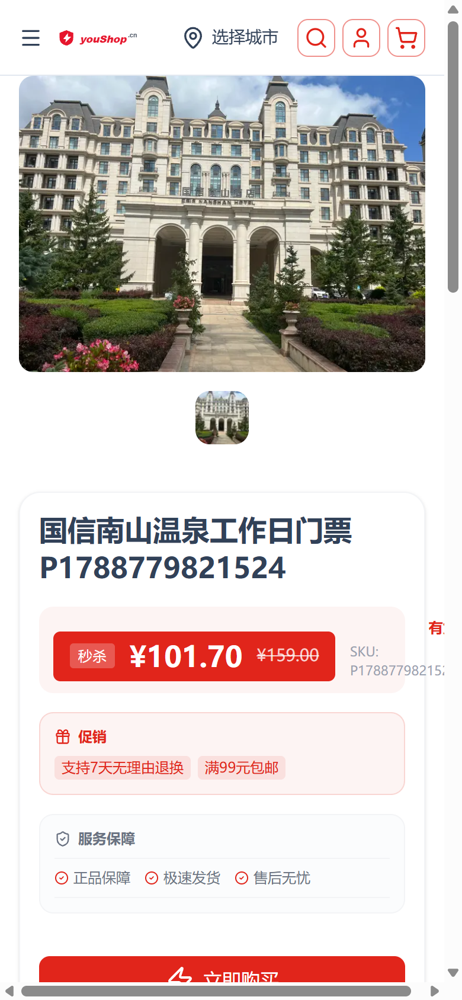

已部署 nshop 前端 · web-admin 后台切换入口，生产 www.youshop.cn / t2 于 2026-09-08。
商品详情页价格块新增两种京东风格版式，均在 后台「店铺信息」页 一键切换；原经典版保留。京东风格固定走京东红 #E1251B，不随商店主题主色。
| 版式 | 说明 | 适用 |
|---|---|---|
classic | 经典：现价(主题色) + 库存/SKU | 默认，跟随主题主色 |
jdA | 京东A 横幅促销价：现价 + 划线原价 + 降价额 + 促销标签 | 有划线价时展示促销感氛围 |
jdB | 京东B 深色价签条：整条京东红价签 + 白字现价 + 划线原价 + 秒杀角标 | 强促销、抢眼价签 |
保存逻辑：仅改写 Channel.customFields.detailConfig → blocks.price.style，保留 detailConfig 其余字段；后端 myUpdateChannelCustomFields 仅合并传入字段，不触碰安全字段。
前端 useDetailConfig(读 detailConfig) → blockStyle(config,'price','classic') → PriceBlock.vue 按 style 渲染 PriceBlockJdA/JdB 或 classic。划线价数据来自 ProductVariant.customFields.listPrice（usePriceWithList 计算现价/划线价/降价额，含税率开关判断）。
| 版式 | 截图 | 关键点 |
|---|---|---|
classic |
 |
现价 ¥101.70 + 有货 + SKU，颜色/卡片/CTA 无回归 |
jdA |
 |
京东红横幅促销：划线原价 ¥159.00 + 降价 ¥57.30 + 直降/到手价标签 |
jdB |
 |
深红价签条：秒杀角标 + 白字现价 + 划线原价，SKU/库存居右 |
演示时临时在默认渠道写入 price.style 并为该商品设划线价（listPrice=15900，¥159），演示完已复原（style 回 classic、listPrice 置 0）。
发现并修复 web-admin「店铺信息」保存的 GRAPHQL_VALIDATION_FAILED 隐患：myUpdateChannelCustomFields 返回类型为 JSON! 标量，无法带 { id } 选择集，否则保存必失败。已去掉该选择并重新部署 web-admin。
| 仓库 | 文件 | 改动 |
|---|---|---|
| nshop | layers/base/app/utils/detail-config.ts | DetailBlockCfg.style + blockStyle() |
layers/base/app/components/product-detail/PriceBlock.vue / PriceBlockJdA.vue / PriceBlockJdB.vue、composables/usePriceWithList.ts、gql/fragments/product.gql、i18n zh-CN/en-US | 划线价查询 + 京东版式 + 语料 | |
| web-admin | src/pages/decorate/shop-info/index.vue | 价格块样式分段选择器 |
src/apis/channel.ts | 查询/字段补 detailConfig |